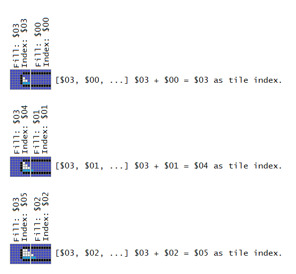

Here, the numbers to the left of each tile indicates an index of the tile array, while the numbers on the right are the fill amount. Combine this image with the one below:
Note: This does not support double-bar's “Using separate graphics”, as having even more tiles would eat up a lot of tile space.
To have this gimmick is very similar to the basic graphical bar code, but you use ConvertBarFillAmountToTilesEdgeOverMultipleTiles instead of ConvertBarFillAmountToTiles. Don't forget to insert the graphics accordingly.
I've provide tables in the exgraphics subfolders (the HTML files) so you don't have to manually enter the tile number for each fill amount.
Perhaps viewing this image will give you a hint on how to have a slanted-edge graphical bar:
Here, the numbers to the left of each tile indicates an index of the tile array, while the numbers on the right are the fill amount. Combine this image with the one below:

| Fill byte table (relative address/example) | Tile byte type | Fill amount | Fill amount maximum | Index to use |
|---|---|---|---|---|
| +0/$7F844A | Left end | $03 | $03 | $04 (This fill amount, plus 1 from next tile amount) |
| +1/$7F844B | Middle 1 | $01 | $08 | $01 (This fill amount, plus 0 of the next tile amount) |
| +2/$7F844C | Middle 2 | $00 | $08 | $00 (This fill amount, plus 0 of the next tile amount) |
| +3/$7F844D | Middle 3 | $00 | $08 | $00 (This fill amount, plus 0 of the next tile amount) |
| +4/$7F844E | Middle 4 | $00 | $08 | $00 (This fill amount, plus 0 of the next tile amount) |
| +5/$7F844F | Middle 5 | $00 | $08 | $00 (This fill amount, plus 0 of the next tile amount) |
| +6/$7F8450 | Middle 6 | $00 | $08 | $00 (This fill amount, plus 0 of the next tile amount) |
| +7/$7F8451 | Middle 7 | $00 | $08 | $00 (This fill amount, plus 0 of the next tile amount) |
| +8/$7F8452 | Right end | $00 | $06 | $00 (use only this tile's fill amount for indexing, don't add by a value after here) |
Duplicate tile numbers on the last n values in the table are needed since the table covers all possible values of the total (the number of items in the table must have NumberOfPiecesInCurrentTile + MaxNumberOfPiecesInNextTile + 1).
If there are 2+ possible different tiles byte types after the current tile (such as middle or right end after the left end), you would take the number of whichever has the highest maximum (in this case, Middle have 8 pieces, and right end have 6 pieces,
therefore you take the 8 and not the 6).
Looking at the previous example image above, left end have 3 pieces, middle have 8 pieces, and right end have 6. Left end's table should have 12 (Index numbered from $00 to $0B, 3 + 8 + 1 = 12) items in the table (not 10 from 3 + 6 + 1), middle
should have 17 (Index numbered from $00 to $10, 8 + 8 + 1 = 17) items in table (not 15 by 8 + 6 + 1.)
Perhaps you wanted a bar that have an outline around the filled region of the bar to avoid “cutoff”. You could have the bar be like this if you don't want to check adjacent tile bytes:

However, you would have outlines in places you don't need to. So how do we have outline only where the fill ends at? Well, this is gonna be similar to how the slanted fill edge works: